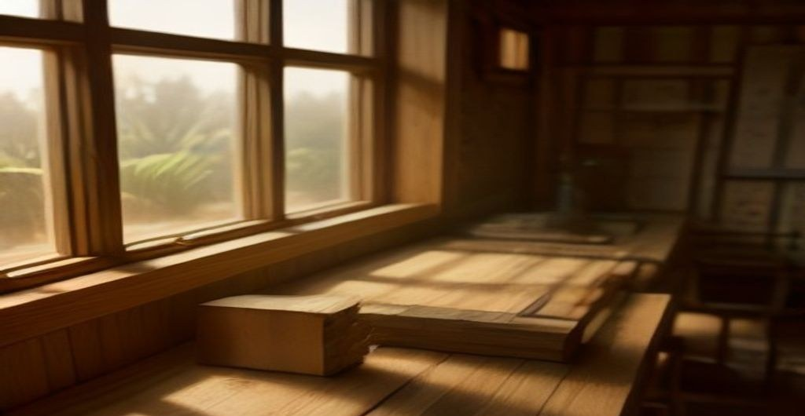
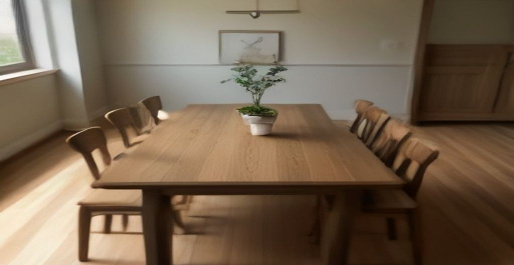
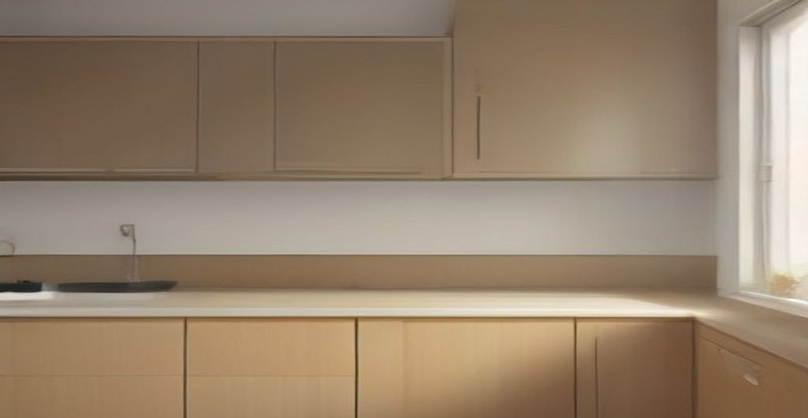
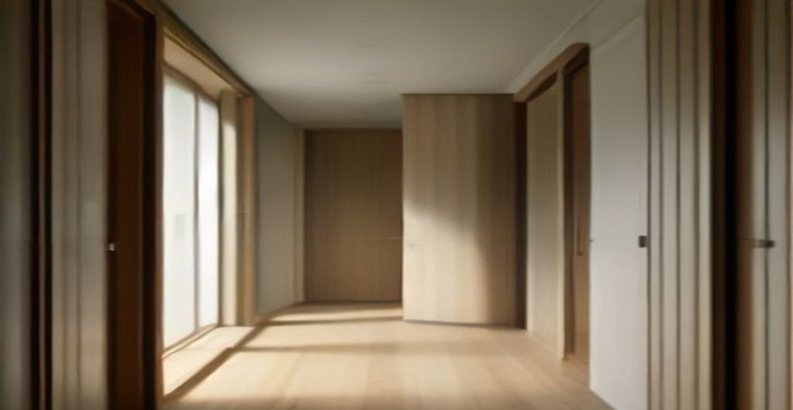

мебельная мастерская, Москва
Стол, который переживёт три переезда
Мебель из массива дуба и ясеня под ваш размер: столы, шкафы, кухонные фронты. Замер бесплатный, срок — от трёх недель. Никаких посредников: делаем сами, в своей мастерской.
Замер бесплатный и ни к чему не обязывает. На него уходит минут сорок.
- своё производство, без посредников
- дуб и ясень со склада — без ожидания заготовок
- срок от 3 недель, дату называем до аванса и держим

Три последние работы



Как идут работы
Замер
Приезжаю с рулеткой и образцами дерева. Померим, подержим в руках, обсудим оттенки. Бесплатно.
Смета
Письменно, до копейки, с разбивкой по дереву и фурнитуре. Меняем пока не договорились — потом цена не трогается.
Производство
В мастерской, у которой вы видели фото. Два промежуточных фото пишу без напоминаний.
Установка
Привозим, собираем, убираем за собой стружку. Гарантия два года на швы и фурнитуру.
Порядок цен
Финальная смета зависит от размеров, но границу вы увидите сразу, до замера:
- Стол обеденный — от 70 000 ₽ (массив дуба, масло)
- Кухонные фронты — от 6 500 ₽ за метр погонный (шпон по клеёной базе)
- Шкаф встроенный — от 95 000 ₽ (за три двери, рейка-фасад)
В ценах — работа и стандартная фурнитура. Плита-камень, редкое покрытие и нестандартная фурнитура считаются отдельно и всегда на смете.
Что спрашивают чаще всего
Дуб или ясень — что выбрать?
Оба дерева — твёрдые, оба переживут детей и лабрадора. Разница в рисунке: у дуба крупные «порезы», у ясеня ровная текстура и он на 15–20% дешевле. Если сомневаетесь — посмотрите образцы на замере, вживую разница за минуту.
Чем «массив» лучше того, что продают в сетях?
Сетевые корпуса — это ЛДСП: спил дерева в клеёной плите. Такой корпус не отдаст влагу обратно, разбухший край не выровнять. Массив можно ошлифовать и промаслить заново через 15 лет: мебель возвращается, будто вчера.
Что если мебель нужна через 2 недели?
Иногда берём, из чего уже в распиле. Честно: гарантий — ноль, зависит от загруженности. Спрашивайте, отвечу прямо по вашему сроку.
Как устроен аванс?
50% — за материалы, остаток — после установки. Дальше второй половины мебель уже у вас, поэтому и работает схема: я рискую раньше, чем вы.
Заявка на бесплатный замер
Напишите пару слов о том, что хотите сделать, и как удобнее связаться. Отвечу в течение часа в рабочее время.
Нажимая «Отправить заявку», соглашаетесь на обработку данных из формы.